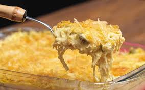

Receita fricasse de frango

Ingredientes:
- -1 pacote (400 gramas) peito de frango cozido e desfiado Sadia
- -3 colheres (sopa) de azeite
- -1 cebola picada
- -2 dentes de alho picados
- -1 tomate sem semente picado
- -1 lata (170 g) de milho verde
- -Sal a gosto
- -Pimenta do reino a gosto
- -Páprica doce a gosto
- -1 pote (200 gramas) de requeijão
- -2 xícaras de chá (90 gramas) de batata palha
- Modo de preparo:
- 1- Em uma frigideira adicione o azeite, refogue a cebola, o alho, o tomate e o milho.
- 2- Acrescente o peito de frango desfiado e tempere com o sal, pimenta do reino e a páprica.
- 3- Acrescente o requeijão e refogue por 5 minutos.
- 4- Transfira a mistura para um refratário e cubra com batata palha.
- 5- Leve ao forno por 10 minutos a 180° C, e sirva em seguida!
Assista ao passo a passo no vídeo:
® Desenvolvido por Vinícius Surlo